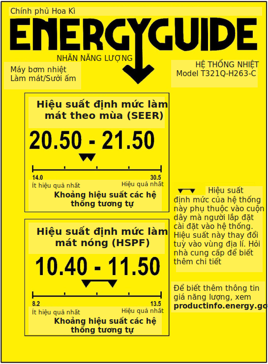

6. Sử dụng nhiệt năng
Động cơ xe lửa là một ví dụ của động cơ nhiệt. Hình ảnh: Nhiếp ảnh gia Chính phủ Nam Úc.
Chúng ta đã bắt gặp nhiệt năng trong hai bối cảnh. Đầu tiên là bức xạ hồng ngoại (Phương trình 1.8) và thứ hai là trong định nghĩa kilocalo (Phần 5, Chương 5). Mặt khác, nhiệt thường được coi là một dạng “chất thải” trong một chuỗi chuyển đổi năng lượng: ma sát, lực cản không khí, v.v. Người ta ám chỉ rằng nhiệt là sản phẩm phụ không mong muốn và không có giá trị.
Tuy nhiên, 94% năng lượng chúng ta sử dụng ngày nay có bản chất là nhiệt 1: chúng ta đốt rất nhiều thứ để lấy năng lượng2! Và đôi lúc nhiệt năng chính là thứ chúng ta cần. Nhưng làm sao có thể sử dụng nó để lái máy bay, chạy ô tô và làm sáng màn hình? Chương này nhằm mục đích làm rõ cách sử dụng nhiệt năng và khám phá các giới hạn về hiệu suất (efficiency) mà ở đó nhiệt có thể thực hiện công (work) phi nhiệt (non-thermal).
Giống như chương trước, nội dung chương này chỉ bổ sung cho những phần thiết yếu của cuốn sách, vốn nhằm mục đích xây dựng một câu chuyện về những gì chúng ta không thể kì vọng tiếp tục làm, những lựa chọn nào con người có thể sử dụng để thay đổi hướng đi và cuối cùng là làm thế nào để đạt được thay đổi như vậy. Tuy nhiên, cách chúng ta sử dụng nhiệt năng là phần quan trọng của câu chuyện và liên quan đến cả con đường hiện tại và tương lai để đáp ứng nhu cầu năng lượng của chúng ta.
1. Tạo ra nhiệt
Trước khi đi sâu vào các vấn đề về nhiệt, chúng ta hãy tóm tắt nhanh các cách khác nhau có thể tạo ra nhiệt.
Ví dụ 6.1.1. Các cách tạo nhiệt:
Sắp xếp sơ bộ theo mức độ phức tạp:
- Xoa hai bàn tay vào nhau (hoặc các hình thức ma sát khác).
- Thu ánh sáng mặt trời, có thể tập trung ánh sáng ấy để lấy nhiệt; phơi quần áo bên ngoài và để ánh nắng sưởi ấm căn phòng qua cửa sổ là những ví dụ.
- Tiếp cận nguồn địa nhiệt (geothermal) ở một số địa điểm được chọn
- Đốt củi trong lò sưởi hoặc bếp lò.
- Đốt nhiên liệu hóa thạch để lấy nhiệt trực tiếp; khí đốt thường được sử dụng trong nhà để sưởi ấm không gian cũng như để đun nước và nấu ăn.
- Cho dòng điện chạy qua một cuộn dây phát ra ánh sáng màu cam; có thể thấy được trong lò nướng bánh, máy sấy tóc, máy sưởi gia đình.
- Sử dụng điện để chạy máy bơm nhiệt (heat pump) (Phần 6 trong chương này)
- Cho phép vật liệu hạt nhân xảy ra phản ứng phân hạch (fission) theo dây chuyền có kiểm soát (như trong nhà máy điện hạt nhân).
- Tạo ra plasma đủ nóng để duy trì phản ứng tổng hợp hạt nhân (fusion)—như mặt trời đã làm trong hàng tỷ năm.
2. Nhiệt dung
Trước hết, chúng ta sẽ kết nối khái niệm nhiệt cơ bản với nội dung mà chúngta đã đề cập trong Phần 5, Chương 5 về calo. Khẳng định rằng cần 1 kcal để đun nóng 1 kg H2O lên 1°C theo đó xác định được nhiệt dung riêng (specific heat capacity) của nước. Trong đơn vị SI , chúng ta có thể nói rằng H2O có nhiệt dung riêng là \(4.184\,J/kg/°C\)3. Có rất ít hợp chất có nhiệt dung riêng cao hơn nước. Hầu hết các chất lỏng, như rượu, có nhiệt dung riêng nằm trong khoảng \(2.000\, J/kg/°C\). Hầu hết các chất rắn phi kim (và thậm chí cả không khí) có nhiệt dung riêng khoảng \(1.000\, J/kg/°C\). Kim loại nằm trong khoảng \(130–900\, J/kg/°C\)—kim loại nhẹ hơn có nhiệt dung riêng cao hơn4. Bảng 6.1 liệt kê một vài nhiệt dung riêng của các chất thông thường.
| Chất | J/kg/°C |
|---|---|
| thép | 490 |
| đá, bê-tông | 750-950 |
| kính | 840 |
| nhôm | 870 |
| không khí | 1.005 |
| nhựa | 1.100-1.700 |
| gỗ | 1.300-2.000 |
| rượu | 2.400 |
| thịt | 3.500 |
| nước | 4.184 |
Bảng 6.1: Nhiệt dung riêng của các loại vật liệu thông dụng.
Biết nhiệt dung riêng của một chất cho phép chúng ta tính toán cần bao nhiêu năng lượng để tăng nhiệt độ của chất đó. Một hướng dẫn gần đúng và hữu ích là coi nước có nhiệt dung riêng khoảng \(4.000\, J/kg/°C\) và tất cả những thứ khác (không khí, đồ nội thất, tường) là \(1.000\, J/kg/°C\). Các hợp chất, giống như thực phẩm, có thể nằm trong khoảng từ \(2.000–3.500\, J/kg/°C\), do hàm lượng nước cao. Nếu bạn còn nghi ngờ thì giá trị \(1.000\, J/kg/°C\) sẽ có sai số không quá lớn. Vì mục đích ước lượng, chúng ta sẽ thêm bớt chỉ khi hợp chất có hàm lượng nước cao5 hay có chứa kim loại6.
Ví dụ 6.2.1
Một xe bán tải có khối lượng 2.000 kg đang chở một thùng nước có dung tích 1 mét khối. Cần bao nhiêu năng lượng để tăng nhiệt độ của cả xe và nước thể lên 5°C?
Một mét khối (1.000 L) nước tương đương 1.000 kg và có nhiệt dung riêng khoảng \(4.000 J/kg/°C\); chiếc xe tải chủ yếu làm bằng thép nên chúng ta có thể ước chừng là \(500\, J/kg/°C\). Nhân từng nhiệt dung riêng cụ thể với khối lượng tương ứng và độ thay đổi nhiệt độ 5°C để suy ra 20 MJ làm nóng nước và 5 MJ để làm nóng xe tải, tổng cộng là 25 MJ7.
Để thực hiện tính toán sử dụng nhiệt dung riêng, hãy thử phương pháp trực quan hơn là những công thức tính toán8. Bạn cần nắm vững điều này sau khi đã tổng hợp từ các ví dụ trên: cần nhiều năng lượng hơn để làm nóng một khối lượng lớn hơn hoặc để tăng nhiệt độ lên cao hơn. Tất cả đều tỷ lệ thuận với nhau. Chính đơn vị cũng đã cung cấp một số gợi ý. Để chuyển từ nhiệt dung riêng tính bằng \(J/kg/°C\) sang năng lượng tính bằng \(J\), chúng ta cần nhân với khối lượng và sự thay đổi nhiệt độ.
Ví dụ 6.2.2
Để tính lượng năng lượng cần thiết để làm nóng một đồ nội thất nặng 30 kg9 lên 8°C, chúng ta sẽ nhân nhiệt dung riêng với khối lượng đồ này—vì “khối lượng lớn hơn” như đã nói ở trên—và nhân thêm với độ tăng nhiệt độ—vì "nhiệt độ cao hơn". Trong trường hợp này, kết quả là 240 kJ.
3. Sưởi/Làm mát trong gia đình
Kinh nghiệm cá nhân của chúng ta với nhiệt năng thường có liên quan nhiều nhất đến việc đun nước, nấu thức ăn và sưởi ấm. Thật vật, hai phần ba năng lượng được sử dụng trong lĩnh vực dân dụng10 có liên quan đến các công tác cần nhiều nhiệt năng, như làm nóng hay làm lạnh không gian, bình nóng lạnh, tủ lạnh, phơi quần áo và nấu ăn.
Khi nói đến việc sưởi ấm (hoặc làm mát) một ngôi nhà, chúng ta có thể quan tâm đến hai điều:
-
Sẽ mất bao lâu để thay đổi nhiệt độ đến một mức nhất định.
-
Sẽ cần bao nhiêu năng lượng để giữ nhiệt độ ở mức mong muốn.
Điều đầu tiên phụ thuộc vào việc có bao nhiêu đồ đạc trong ngôi nhà11, mức thay đổi nhiệt độ \(\Delta{T}\) mà bạn muốn, và công suất sẵn có để làm nóng/lạnh là bao nhiêu. Năng lượng cần thiết bằng khối lượng nhân với \(\Delta{T}\) nhân với khoảng \(1.000\,J/kg/°C\) nhiệt dung riêng. Thời gian cần thiết để thay đổi nhiệt độ bằng năng lượng chia cho công suất.
Ví dụ 6.3.1
Mất bao lâu để làm nóng không gian bên trong của một nhà di động (mobile home) từ 0°C đến 20°C bằng hai máy sưởi phòng 1.500 W? Chúng ta sẽ giả định rằng cần phải làm nóng một khối lượng 6.000 kg 12.
Việc đầu tiên là tìm năng lượng cần thiết sau đó chia cho công suất để ra kết quả về thời gian. Chúng ta sẽ sử dụng nhiệt dung riêng tiện lợi \(1.000\, J/kg/°C\).
Nhân nhiệt dung riêng này với khối lượng và mức nhiệt độ thay đổi ra kết quả 120 MJ. Với công suất 3.000 W, sẽ cần 40.000 giây—hay khoảng 11 tiếng—để tạo ra chừng này năng lượng.
Cần bao nhiêu năng lượng để duy trì nhiệt độ tùy thuộc vào cách truyền nhiệt ra ngoài (hay vào trong) ngôi nhà thông qua cửa sổ, tường, trần, sàn và lỗ thông khí. Nhưng nó cũng phụ thuộc tuyến tính (linear) vào sự duy trì \(\Delta{T}\)—sự chênh lệch giữa nhiệt độ bên trong và bên ngoài. Một ngôi nhà có thể được đặc trưng bởi tốc độ mất nhiệt (heat loss rate) tính bằng đơn vị Watts trên độ C (W/°C)13. Chỉ cần con số này để biết năng lượng cần thiết để duy trì một mức chênh lệch nhiệt độ \(\Delta{T}\) nhất định giữa bên trong và bên ngoài ngoài. Hộp 6.1 trình bày một ví dụ về cách tính tốc độ mất nhiệt cho một ngôi nhà và Ví dụ 6.3.2 áp dụng kết quả đó vào các tình huống thực tế.


Hình 6.1: Tường ngoài và cửa sổ của ngôi nhà được mô hình hóa trong Hộp 6.1. Sàn và trần không được hiển thị. Các con số trong \(W/m^2/°C\) là giá trị U (U-values) và trong trường hợp này được ngôi nhà được xây bởi các phương pháp kỹ thuật tốt nhất (best engineering practices). Hầu hết mọi ngôi nhà sẽ có giá trị này lớn hơn gấp từ 2 đến 6 lần. Đừng quên cửa ra vào của một ngôi nhà thực sự!
Hộp 6.1: Xây nhà
Các phương pháp kỹ thuật tốt nhất mang lại kết quả là một ngôi nhà được xây dựng ấm cúng đủ tiêu chuẩn gọi là “Nhà thụ động” (Passive House), đạt được 0,15 W/°C cho mỗi mét vuông bề mặt tiếp xúc với bên ngoài14 và 0,8 W/°C trên mỗi mét vuông diện tích cửa sổ.
Hãy tưởng tượng một ngôi nhà có diện tích 12 m × 12 m, tường cao 2,5 m, mỗi bức tường có hai cửa sổ và mỗi cửa sổ có diện tích 2 m2 (Hình 6.1). Sàn và trần đều rộng 144 m2, và diện tích tường (chu vi nhân với chiều cao) 48 × 2,5 = 120 m2. Nhưng chúng ta trừ 16 m2 của tám cửa sổ, còn lại 104 m2 cho các bức tường. Kết quả nhiệt mất mát của ngôi nhà là 13 W/°C đối với cửa sổ (\(0,8\, W/m^2/°C × 16 m^2\)), cộng với 59 W/°C đối với tường/sàn/trần với tổng cộng là 72 W/°C.
Tỷ lệ mất nhiệt của một ngôi nhà được xây dựng cẩn thận có thể gấp đôi con số này, trong khi một ngôi nhà được xây dựng thông thường (ít chú ý đến hiệu quả sử dụng nhiệt năng) có thể gấp 3 đến 6 lần con số này—vài trăm W/°C. Tất nhiên, những ngôi nhà nhỏ hơn có diện tích nhỏ hơn cho việc truyền nhiệt nên nhiệt mất mát sẽ nhỏ hơn.
Các con số được sử dụng để mô tả đặc tính mất nhiệt của tường và cửa sổ được gọi là giá trị U (U-values), tính bằng đơn vị \(W/m^2/°C\), trong đó các con số thấp thể hiện chất cách nhiệt tốt hơn. Ở Hoa Kỳ, vật liệu xây dựng được mô tả bằng giá trị nghịch đảo, được gọi là giá trị R (R-value), đơn vị là \(°F·ft^2·giờ/Btu\). Cả hai có liên quan về mặt số học \(R = 5{,}7/U\), do đó tường Nhà thụ động (Passive House) của chúng ta có \(R = 38\) và các cửa sổ có \(R ≈ 7\)—cả hai con số đều khá ấn tượng và khó đạt được trong thực tế.
Ví dụ 6.3.2
Hãy so sánh mức độ năng lượng để giữ ba ngôi nhà khác nhau ở nhiệt độ \(20°C\) khi nhiệt độ bên ngoài là \(0°C\) (điểm đóng băng). Ngôi nhà được xây dựng tươm tất như mô tả trong Hộp 6.1, ở đây chúng ta làm tròn hệ số thất thoát nhiệt (heat loss rate) ở mức \(75\, W/°C\). Sau đó, chúng ta hãy hình dung một ngôi nhà được xây dựng tốt có hệ số mất nhiệt \(150\, W/°C\) và một ngôi nhà điển hình15 có hệ số mất nhiệt \(300\, W/°C\).
Chênh lệch nhiệt độ, \(\Delta{T}\), là \(20°C\) nên ngôi nhà siêu ấm áp của chúng ta cần \(75\, W/°C\) nhân \(20°C\), bằng \(1.500\, W\)16 để giữ ấm, trong khi một ngôi nhà tương đối tốt cần \(3.000\, W\) và một nhà kém hơn cần \(6.000\, W\).
Khi đã biết cần bao nhiêu năng lượng để duy trì nhiệt độ nhất định bên trong trong một ngôi nhà (so với nhiệt độ ngoài nhà, \(\Delta{T}\)), chúng ta có thể dự đoán trước hoạt động của máy sưởi trong nhà. Máy sưởi thường bật hết công suất hoặc tắt. Việc điều chỉnh đạt được bằng cách bật và tắt nhiệt lượng—thường được điều khiển bằng bộ điều chỉnh nhiệt. Với công suất định mức (rating) của máy sưởi17, việc dự đoán chu kỳ hoạt động (duty cycle)18 là điều đơn giản: đó là tỷ lệ phần trăm thời gian cần thiết để tạo ra công suất trung bình để duy trì mức chênh lệch \(\Delta{T}\).
Trên thế giới, công suất máy sưởi phần lớn được đặc trưng bởi W (hoặc kW). Ở Mỹ, thước đo cho nhiều thiết bị là Btu/giờ. Vì 1 Btu bằng 1.055 J và một giờ bằng 3.600 giây, nên một Btu/giờ tương đương với 0,293 W19. Toàn bộ máy sưởi trong nhà—đôi khi dưới dạng lò sưởi—có thể có công suất định mức ở 30.000 Btu/giờ (khoảng 10 kW), trong trường hợp này, ba ngôi nhà trong Ví dụ 6.3.2 sẽ đòi hỏi cầu máy sưởi lần lượt phải bật trong khoảng 15%, 30%, hoặc 60% thời gian (chính là chu kì hoạt động) để duy trì độ chênh lệch nhiệt độ \(\Delta{T} = 20°C\) bên trong ba ngôi nhà.
Chúng ta cũng có thể tính toán được xem máy sưởi nói trên có thể duy trì độ chênh lệch nhiệt độ \(\Delta{T}\) bao nhiêu trong ba ngôi nhà. Một ngôi nhà đòi hỏi 100 W/°C và có lò sưởi với công suất 10.000 W có thể giữ \(\Delta{T}\) cao tới 100°C20. Vì thế, ba ngôi nhà trong Ví dụ 6.3.2 có thể giữ được độ chêch nhiệt độ \(\Delta{T}\) lần lượt là 133°C, 67°C và 33°C nếu được trang bị bộ sưởi 10 kW (∼30.000 Btu/giờ). Một ngôi nhà ấm cúng không cần lắp đặt một lò sưởi công suất lớn vậy. Ngôi nhà được xây dựng kém có thể duy trì chênh lệch nhiệt độ \(\Delta{T} = 33°C\) khi chạy hết công suất, có nghĩa là nếu nhiệt độ bên ngoài giảm xuống dưới 13°C (8,6°F) , nó sẽ không thể giữ được nhiệt độ bên trong ở mức 20°C. Vì vậy, một ngôi nhà ở vùng có khí hậu lạnh nên được xây dựng theo tiêu chuẩn nhiệt tốt hơn hoặc sẽ cần một máy sưởi công suấtlớn hơn—với nhiều chi phí hơn để sưởi ấm21.
Làm mát một ngôi nhà (hoặc nội thất tủ lạnh, hoặc bất cứ thứ gì) cũng là một quá trình nhiệt, nhưng trong trường hợp này liên quan đến việc lấy (remove) nhiệt năng ra khỏi môi trường mát hơn. Việc lấy nhiệt khó thực hiện hơn, bằng chứng là trong lịch sử lâu dài của mình, loài người đã sử dụng các nguồn sưởi ấm—bắt đầu với lửa—so với khoảng thời gian tương đối ngắn khi chúng ta có thể làm mát theo yêu cầu22. Phần 5 sẽ nói về nguyên tắc làm sao điều này thậm chí có thể xảy ra. Hiện tại, chỉ cần lưu ý công suất định mức của máy điều hòa không khí sử dụng cùng đơn vị với máy sưởi: lượng nhiệt lượng cần bị đẩy (ra khỏi mô trường mát hơn) trên một đơn vị thời gian. Theo đơn vị SI, chúng ta biết đó là công suất, Watt. Ở Hoa Kì, Btu/giờ.
4. Động cơ nhiệt
Bây giờ chúng ta thảo luận về việc sử dụng nhiệt năng trong một số việc khác, bên cạnh việc cung cấp nhiệt trực tiếp cho ngôi nhà. Có vẻ kỳ lạ khi chúng ta luôn mô tả quá trình đốt cháy nhiên liệu là một tác dụng nhiệt thuần túy, trong khi những gì diễn ra trong xi lanh của động cơ đốt trong đốt xăng có vẻ giống một vụ nổ nhỏ (little explosion) hơn là chỉ tạo ra nhiệt. Điều này không sai nhưng cũng chưa phải là toàn bộ câu chuyện. Quá trình này vẫn bắt đầu như một quá trình nhiệt căn bản. Khi hỗn hợp nhiên liệu-không khí bắt lửa cháy, nhiệt độ trong xi lanh tăng lên đáng kể. Để hiểu rõ hệ quả xảy ra thời, chúng ta dùng định luật khí lí tưởng (ideal gas law):
\(P\), \(V\) và \(T\) lần lượt là áp suất, thể tích và nhiệt độ (đơn vị tính bằng \(N/m^2\), \(m^3\) và Kelvin). \(N\) là số lượng nguyên tử hay phân tử, và \(k_{B} = 1{,}38 × 10^{-23}\, J/K\) là hằng số Boltzmann (Boltzmann constant), chúng ta sẽ gặp lại trong Phần 2, Chương 13. Nhiệt độ tăng đủ nhanh khi đánh lửa để thể tích xi lanh không có thời gian thay đổi23. Phương trình \(\eqref{6.1}\) cho chúng ta biết áp suất cũng phải tăng vọt khi nhiệt độ tăng lên, khi giữ tất cả các yếu tố khác không đổi. Áp suất tăng lên sẽ đẩy piston ra xa, làm tăng thể tích xi lanh và thực hiện công (work)24. Nhưng tất cả đều bắt đầu bằng nhiệt,thông qua sự gia tăng mạnh về nhiệt độ.
Định nghĩa 6.4.1
Động cơ nhiệt (heat engine) được định nghĩa một cách tương đối là bất kỳ hệ thống nào chuyển hoá nhiệt (heat) hoặc nhiệt năng thành cơ năng: tạo ra chuyển động.
Ví dụ 6.4.1: Ví dụ về động cơ nhiệt: khi nhiệt tạo ra chuyển động
- Không khí nóng trên nóc ô tô bay lên, nhận cả động năng lẫn thế năng hấp dẫn;
- Gió cũng tương tự như trên, vì không khí tiếp xúc với mặt đất được sưởi ấm bởi mặt trời sẽ bay lên và có động năng ở quy mô khí quyển;
- Nhiệt độ tăng đột ngột trong xi lanh đốt trong làm khí trong xi lanh giãn nở nhanh chóng;
- Hơi nước trong nhà máy nhiệt điện chạy qua tuabin vì nó chảy vào bình ngưng lạnh (cold condenser)
| Nguồn | % Năng lượng điện ở Hoa Kì | Nhiệt năng | Tua-bin và máy phát điện |
|---|---|---|---|
| Khí ga tự nhiên | 35,3 | ||
| Than đá | 27,3 | ||
| Nguyên tử | 19,2 | ||
| Thủy điện | 7,0 | ||
| Điện gió | 6,6 | ||
| Điện mặt trời | 2,2 | ||
| Sinh khối | 1,5 | ||
| Dầu mỏ | 0,6 | ||
| Địa nhiệt | 0,4 | ||
| Nhiệt mặt trời | 0,09 |
Bảng 6.2: Kế hoạch sản xuất điện năng. Hầu hết trong số này đều tạo ra nhiệt và gần như tất cả đều sử dụng tua-bin và máy phát điện. Số liệu năm 2018.
Ví dụ cuối cùng xứng đáng có hình ảnh minh họa riêng, vì nó có vai trò quan trọng trong cuộc sống: gần như toàn bộ quá trình sản xuất điện của chúng ta—từ tất cả các nhiên liệu hóa thạch và thậm chí từ phản ứng phân hạch hạt nhân—đều đi theo qui trình này. Hình 6.2 minh họa sơ đồ cơ bản. Bảng 6.2 chỉ ra rằng 98% sản lượng điện năng của chúng ta liên quan đến việc quay tuabin trên trục nối với máy phát điện và 84% liên quan đến quá trình nhiệt làm quay tuabin—thường ở dạng hơi nước.


Hình 6.2: Sơ đồ nhà máy nhiệt điện thông thường, trong đó một số nguồn nhiệt tại \(T_{h}\) tạo ra hơi nước ngưng tụ về phía bình ngưng—nơi hơi nước nguội đi và ngưng tụ thành nước dạng lỏng, nhờ tiếp xúc nhiệt với nguồn mát tại \(T_{c}\) được cung cấp bởi một nguồn nước hoặc tháp bay hơi. Trên đường đi, hơi nước làm quay tuabin nối với máy phát điện, tạo ra điện. Qui trình này cơ bản này được áp dụng cho hầu hết các nhà máy điện sử dụng nhiên liệu hóa thạch, nguồn nhiệt hạt nhân, nhiệt mặt trời hay địa nhiệt (geothermal).
Giới hạn entropy và hiệu suất
Một khái niệm sâu sắc và mạnh mẽ của vật lý đặt ra giới hạn cho mức độ “công” hữu ích có thể được sử dụng từ dòng chảy nhiệt phát ra từ một nguồn nóng ở nhiệt độ \(T_{h}\) từ một nguồn nhiệt độ \(T_{c}\). Đó là entropy. Bạn không cần phải hiểu sâu sắc về khái niệm entropy để có thể hiểu đầy đủ diễn biến trong phần này cũng như vai trò của entropy trong việc giới hạn hiệu suất động cơ nhiệt. Nội dung chi tiết sẽ được chúng ta tìm hiểu ngay sau đây.
Định nghĩa 6.4.2
Entropy là thước đo xem có bao nhiêu cách một hệ thống có thể được tổ chức ở cấp độ vi mô trong khi vẫn bảo toàn năng lượng nội tại (internal energy)25
Định nghĩa này có thể là một sự thất vọng mơ hồ đối với những người mong đợi entropy được định nghĩa như một thước đo của sự hỗn loạn (disorder)26. Hãy quan sát một chất khí duy trì ở áp suất, thể tích và nhiệt độ không đổi —do đó tổng năng lượng trong chất khí là không đổi. Các nguyên tử/phân tử trong chất khí có thể sắp xếp thành một số lượng lớn các cấu hình: với bất kỳ vị trí, vận tốc, tốc độ quay và định hướng trục, hoặc trạng thái dao động nào của mỗi phân tử—trong khi năng lượng tổng thể vẫn giữ nguyên.
Ví dụ 6.4.2
Để minh họa, hãy xem xét một hệ nhỏ chứa 3 phân tử có nhãn A, B và C, có tổng năng lượng là 6 đơn vị được phân chia giữ các phân tử theo một cách nào đó. Chúng đều có thể có chính xác 2,0 đơn vị năng lượng chia đều cho mỗi phân tử; hay mỗi phân tử có năng lượng lần lượt là 1,2; 1,8 và 3,0 đơn vị; hay 3,2; 0,4 và 2,4 đơn vị; hay bất kì một kết hợp nào sao cho tổng năng lượng vẫn bằng 6 đơn vị. Entropy là thước đo xem có thể có bao nhiêu cách kết hợp27 như vậy.


Hình 6.3: Một hộp chứa 4 nguyên tử hoặc phân tử cùng một loại (màu trắng) và 4 nguyên tử hoặc phân tử thuộc loại khác (màu đỏ) có nhiều cấu hình hay cách phân bố hơn (số cách phân bố trong ngoặc đơn) khi các loại được phân bố đều sao cho bên trái và bên phải đều có hai phân tử trắng hoặc đen mỗi loại (phần bố 2:2 ở giữa). Entropy liên quan đến số cách mà một hệ thống có thể tự phân bố (ở cùng mức năng lượng), hoạt động theo hướng ưu tiên sự xáo trộn hỗn loại hơn là sự sắp xếp có trật tự (ít có khả năng xảy ra) (phân bố 0:4 hay 4:0 ở hai bên).
Ví dụ 6.4.3
Để làm sáng tỏ hơn mối liên hệ giữa entropy và tính hỗn loạn, hãy tưởng tượng một hộp không khí chứa cả phân tử N2 và O2. Như Hình 6.3 minh họa, một sự phấn bố xếp được hòa kỹ lưỡng có số lượng cấu hình khả thi lớn hơn, do đó có entropy cao nhất. Thiên nhiên không tạo ra sự tổ chức tự phát (sắp xếp một cách ngăn nắp) trong một hệ thống khép kín28.
Định luật thứ nhất của Nhiệt động lực học (The First Law of Thermodynamics) là định luật mà chúng ta đã gặp dưới dạng bảo toàn năng lượng.
Định nghĩa 6.4.3
Định luật Nhiệt động lực học thứ nhất: năng lượng của một hệ kín được bảo toàn và không thể thay đổi nếu không có gì—kể cả nănglượng—đi vào hoặc rời khỏi ranh giới của hệ.
Bây giờ chúng ta đã sẵn sàng cho Định luật thứ hai (Second Law).
Định nghĩa 6.4.4
Định luật Nhiệt động lực học thứ hai: Tổng entropy của một hệ kín có thể không bao giờ giảm.
Entropy chi phối cách nhiệt truyền (từ nóng đến lạnh, nếu để yên) và theo ý nghĩa sâu sắc hơn, nó định nghĩa “mũi tên thời gian” (arrow of time).
Hộp 6.2: Mũi tên thời gian
Hình dung rằng bạn được xem video về một tảng đá rơi xuống nước, một cốc cà phê vỡ trên sàn hay một cột băng tan chảy, bạn sẽ không gặp khó khăn gì trong việc phân biệt giữa việc tua ngược hay tua xuôi việt phát video.
Bạn có thể kết luận rằng rằng hành động ngược lại là vô lý và có thể không bao giờ xảy ra. Những mảnh gốm vương vãi khắp sàn sẽ không bao giờ tự động tập hợp lại thành một chiếc cốc và nhảy khỏi sàn! Năng lượng không phải là rào cản, bởi vì tổng năng lượng ở mọi dạng (hay cách sắp xếp phân tử)trước và sau đều như nhau29. Đó là entropy: các trạng thái càng có trật tự thì càng ít có khả năng xuất hiện một cách tự nhiên. Để đánh giá mức độ phổ biến của entropy, hãy tưởng tượng việc phát hiện một video “giả” đang chạy ngược dễ dàng như thế nào (so với video chạy xuôi bình thường).
Hai định luật nhiệt động lực học này, cộng với cách định lượng sự thay đổi entropy mà chúng ta sẽ thấy sau đây, là tất cả những gì chúng ta cần để tìm ra hiệu suất tối đa mà một động cơ nhiệt có thể đạt được trong việc thực hiện công. Nếu chúng ta rút một lượng nhiệt, \(\Delta{Q_{h}}\) từ một bể tắm nước nóng30 ở nhiệt độ \(T_{h}\), và cho phép một phần năng lượng này được “xuất khẩu” dưới dạng công có ích, thì phần còn lại chúng ta phải truyền dưới dạng nhiệt (\(\Delta{Q_{c}}\)) vào bể nước lạnh tắm ở nhiệt độ \(T_{c}\). Hình 6.4 cho biết cấp sơ đồ của quá trình này. Định luật thứ nhất của Nhiệt động lực học31 đòi hỏi \(\Delta{Q_{h}} = \Delta{Q_{c}} + \Delta{W}\), hay toàn bộ nhiệt lượng tỏa ra từ bể nước nóng được thể hiện dưới dạng công bên ngoài và chảy vào bể lạnh: không có năng lượng nào bị mất đi cả.


Hình 6.4: Cân bằng năng lượng của động cơ nhiệt. Nhiệt truyền từ bể nóng sang bể lạnh có thể thực hiện công hữu ích, \(\Delta{Q}\), trong quá trình đó—tuân theo sự bảo toàn năng lượng, \(\Delta{Q_{h}} = \Delta{Q_{c}} + \Delta{W}\), trong đó \(\Delta{Q}\) là dòng nhiệt năng lưu chuyển. Entropy giới hạn độ lớn có thể của \(\Delta{W}\). Độ rộng mũi tên tỷ lệ thuận với năng lượng và số màu đỏ là lượng năng lượng sử dụng trong ví dụ này.
Vậy entropy xuất hiện ở đâu? Lấy nhiệt từ bể nước nóng với lượng \(\Delta{Q_{h}}\) dẫn đến sự thay đổi entropy trong bể nước nóng theo Định nghĩa 6.4.5
Định nghĩa 6.4.5: Thay đổi Entropy"
khi năng lượng (nhiệt, \(\Delta{Q}\), tính bằng J) được truyền vào hoặc ra khỏi bể ở nhiệt độ \(T\), sự thay đổi entropy kèm theo của bể, \(\Delta{S}\), tuân theo phương trình:
Khi nhiệt lượng bị truyền ra, entropy giảm. Khi nhiệt được thêm vào, entropy tăng. Nhiệt độ, \(T\), phải tính bằng độ Kelvin và entropy được đo bằng đơn vị J/K.
| Kí hiệu | Mô tả |
|---|---|
| \(T\) | nhiệt độ (\(K\)) |
| \(\Delta{T}\) | thay đổi nhiệt độ (\(K\), \(°C\)) |
| \(\Delta{Q}\) | nhiệt năng (\(J\)) |
| \(\Delta{W}\) | cơ năng (\(J\)) |
| \(\Delta{S}\) | thay đổi entropy |
| \(\epsilon\) | hiệu suất |
| \(\eta\) | hệ số entropy |
Bảng 6.3 Kí hiệu nhiệt động lực học.
Vì vậy, việc lấy năng lượng từ bể nước nóng làm giảm entropy trong bể nước nóng tương ứng \(\Delta{S_{h}}\) theo phương trình \(\Delta{Q_{h}} = T_{h}\Delta{S_{h}}\).Trong khi đó, \(\Delta{S_{c}}\) entropy được thêm vào bể lạnh theo phương trình \(\Delta{Q_{c}} = T_{c}\Delta{S_{c}}\). Định luật thứ hai của Nhiệt động lực học đòi hỏi rằng tổng thay đổi entropy không âm (hay không thể giảm). Theo công thức dạng phương trình (định nghĩa kí hiệu trong Bảng 6.3)32:
Ở đây chúng ta trừ đi \(\Delta{S_{h}}\) vì đây là bớt entropy, trong khi \(\Delta{S_{c}}\) là thêm entropy. Vì thế chúng ta đòi hỏi rằng:
Giờ đây chúng ta có thể đặt câu hỏi xem bao nhiêu phần trăm của \(\Delta{Q_{h}}\) có thể được chuyển thành công có ích (\(\Delta{W}\)) trong giới hạn mà Định luật nhiệt động học thứ hai đã đặt ra. Chúng ta biểu diễn điều này dưới dạng hiệu suất (efficiency)33, kí hiệu bằng chữ cái Hy Lạp epsilon:
Bước thứ hai của phương trình trên áp dụng định luật bảo toàn năng lượng: \(\Delta{Q_{h}} = \Delta{Q_{c}} + \Delta{W}\)
Ví dụ 6.4.4: Hiệu suất thực tế
Nếu quan sát thấy một động cơ nhiệt hoạt chuyển 30 J từ bể nước nóng và truyền 20 J vào bể nước lạnh,như trong Hình 6.4, hiệu suất của động cơ nhiệt này trong việc tạo ra công có ích là bao nhiêu?
Chúng ta có thể suy ra \(\Delta{W} = 10\,J\) và sử dụng dạng đầu tiên của Phương trình \(\eqref{6.5}\), hoặc áp dụng dạng thứ hai, kết quả đều là ⅓ hay 33%.
Chúng ta có thể thêm một bước vào Phương trình \(\eqref{6.5}\) và thể hiện nó dưới dạng entropy thay đổi:
Trong đó chúng ta biểu diễn mỗi \(\Delta{Q}\) tương đương \(T\Delta{S}\) thêm/bớt entropy. Chúng ta có thể chia cả tử và mẫu số cho \(\Delta{S_{h}}\):
Trong đó \(\eta\) (eta) biểu thị hệ số entropy: \(\eta = \Delta{S_{c}}/\Delta{S_{h}}\), chúng ta biết từ Phương trình \(\eqref{6.4}\) không thể nhỏ hơn 134:
Nhìn vào Phương trình \(\eqref{6.7}\), nếu chúng ta muốn đạt hiệu quả cao nhất để tạo ra công có ích từ một dòng nhiệt, chúng ta muốn tử số càng lơn càng tốt. Để đạt được điều này, chúng ta muốn trừ \(T_{h}\) càng ít càng tốt. Nếu \(\eta\) trở nên rất lớn thì tử số sẽ giảm đi. Vì thế chúng ta muốn giá trị nhỏ nhất có thể cho \(\eta\), đó là khi \(\eta = 1\) từ Phương trình \(\eqref{6.8}\). Từ đó chúng ta có thể suy ra mức hiệu quả vật lí tối đa (hay cực đại) một động cơ nhiệt có thể đạt được:
Trong đó chúng ta đặt \(\Delta{T} = T_{h} - T_{c}\) là độ chênh lệch nhiệt độ giữa bồn nóng và lạnh. Kết luận quan trọng ở đây là hiệu suất tăng khi \(\Delta{T}\) tăng, và trở nên nhỏ hơn khi \(\Delta{T}\) nhỏ hơn.
Đơn vị nhiệt độ
Đơn vị nhiệt độ trong phương trình phải là Kelvin. Nhắc bạn: \(T(K) ≈ T(°C) + 273\).
Ví dụ 6.4.5
Nếu một động cơ nhiệt hoạt động giữa bể nước nóng ở 800 K và môi trường bình thường có nhiệt độ khoảng 300 K35 thì hiệu suất tối đa là 62,5%.
Ví dụ 6.4.6
Một động cơ nhiệt hoạt động giữa nước sôi và nước đóng băng, có nhiệt độ nước sôi \(T_{h} ≈ 373 K\) và \(\Delta{T} = 100 K\), có hiệu suất cực đại \(\epsilon{}_{max} = 0{,}268\), hay 26,8%.
Ví dụ 6.4.7
Một động cơ nhiệt hoạt động ở nhiệt độ da người là 35°C và nhiệt độ môi trường xung quanh là 20°C có hiệu suất cực đại là \(\epsilon{}_{max} = 15/308 ≈ 0{,}05\), hay 5%.
Nếu nhiệt độ bể nước lạnh được cố định36 thì hiệu suất tối đa có thể sẽ cải thiện khi nhiệt độ của bể nóng tăng lên. Ngược lại, với nhiệt độ bể nóng nhất định \(T_{h}\), hiệu suất tăng khi nhiệt độ bể lạnh giảm và do đó \(\Delta{T}\).
Hộp 6.3: Ở giới hạn cực đại...
Nếu \(T_{c}\) tiến tới 0 K37, hiệu suất tối đa đạt được là 100%. Chúng ta có thể suy ra điều này từ mối quan hệ \(\Delta{Q} = T\Delta{S}\), ám chỉ rằng khi \(T\) rất nhỏ, không cần nhiều nhiệt (\(\Delta{Q}\)) để đáp ứng yêu cầu về lượng entropy được thêm vào bể lạnh (\(\Delta{S_{c}}\)) đủ lớn đến mức tổng entropy không âm. Từ đó rộng mũi tên trong Hình 6.4 cho \(\Delta{Q}\) trở nên mỏng (nhỏ) hơn cho phép \(\Delta{W}\) có độ dày (lớn) gần bằng \(\Delta{Q_{h}}\). Điều này có nghĩa là toàn bộ năng lượng sẵn có sẽ sinh công có ích và hiệu suất sẽ rất cao. Trên thực tế, Trái đất không chưa phải là một bể đủ lạnh để hiệu ứng này phát huy tác dụng, nhưng thảo luận về điều này là một cách để hiểu rõ hơn về Phương trình \(\eqref{6.9}\).
Động cơ nhiệt thực tế như nhà máy nhiệt điện (Hình 6.2) hoặc động cơ ô tô có xu hướng chỉ đạt được một nửa hiệu suất lý thuyết do gặp phải vô số thách thức thực tế. Hiệu suất điển hình của một nhà máy nhiệt điện vào khoảng 30–40%, trong khi ở ô tô thường nằm trong khoảng 15–25%. Ngược lại, nhiệt độ đốt cháy trong động cơ khoảng 700–800°C cho thấy hiệu suất lý thuyết tối đa là khoảng 60%.
5. Máy bơm nhiệt (Heat Pump)
Chúng ta có thể đảo ngược động cơ nhiệt và gọi nó là máy bơm nhiệt. Trong trường hợp này, chúng ta dùng năng lượng từ bên ngoài để điều khiển một dòng nhiệt ngược với hướng tự nhiên của nó—như đẩy nhiệt đi lên. Đây là cách tủ lạnh38 hoạt động. Hình 6.5 trình bày qui trình này.


Hình 6.5: Cân bằng năng lượng bơm nhiệt. Việc dùng năng lượng, tạo ra công có ích (\(\Delta{W}\); từ một nguồn điện chẳng hạn) có thể làm cho nhiệt truyền từ một bình chứa lạnh (như bên trong tủ đông) sang một môi trường nóng hơn—ngược với trực giác thông thường. Ví dụ cặp truyền nhiệt từ \(T_{c}\) (lạnh) \(→\) \(T_{h}\) (nóng), có thể áp dụng từ bên trong ngăn đông → nhiệt độ phòng; nhà mát mẻ bên trong → mùa hè bên ngoài; mùa đông bên ngoài → bên trong ấm áp hơn. Chúng ta vẫn phải thỏa mãn sự bảo toàn năng lượng (\(\Delta{Q_{h}} = \Delta{Q_{c}} + \Delta{W}\)), trong đó \(\Delta{Q}\) là dòng truyền nhiệt. Các ràng buộc về entropy giới hạn độ lớn \(\Delta{Q_{c}}\) đối với \(\Delta{W}\) nhất định. Độ rộng mũi tên tỷ lệ thuận với năng lượng và số màu đỏ là lượng năng lượng sử dụng.
Một chuỗi logic tương tự có thể được áp dụng cho qui trình, viện dẫn Định luật nhiệt động học thứ hai để đảm bảo không giảm entropy. Chúng ta định nghĩa hiệu suất dựa trên những ứng dụng và những gì chúng ta quan tâm, dẫn đến hai con số tương ứng như sau.
Định nghĩa 6.5.1: \(\bf{\eta{}_{cool}}\)
Đối với các ứng dụng làm mát39, chúng ta quan tâm đến lượng nhiệt có thể được chuyển ra khỏi môi trường làm mát (\(\Delta{Q_{c}}\)) ứng với một đầu vào năng lượng, hay công nhất định (\(\Delta{W}\)). Khi đó hiệu suất được đặc trưng bởi tỷ suất \(\eta{}_{cool} = \Delta{Q_{c}} / \Delta{W}\).
Định nghĩa 6.5.2: \(\bf{\eta{}_{heat}}\)
Đối với các ứng dụng sưởi ấm40, chúng ta quan tâm đến nhiệt lượng được cung cấp cho bể nóng (\(\Delta{Q_{h}}\)) đối với một lượng công đầu vào nhất định (\(\Delta{W}\)). Hiệu suất khi đó được đặc trưng bởi tỷ số \(\eta{}_{heat} = \Delta{Q_{h}} / \Delta{W}\).
Theo định nghĩa trên, và căn cứ theo yêu cầu lượng entropy thêm vào bể nóng không được nhỏ hơn lượng entropy lấy ra khỏi bể lạnh sao cho tổng độ biến thiên entropy không âm41, chúng ta có hiệu suất tối đa cho phép trong làm mát dựa trên máy bơm nhiệt như sau:
tương tự với việc làm nóng:
Các phương trình này ai đoạn trông rất giống Phương trình \(\eqref{6.9}\), nhưng bị đảo ngược. Hiệu suất tối đa có thể lớn hơn 100%42!
Ví dụ 6.5.1
Giới hạn hiệu suất của việc duy trì nhiệt độ tủ ở mức -10°C so với nhiệt độ phòng 20°C?
Trước hết, chúng ta biểu diễn nhiệt độ bằng Kelvin: \(T_{c} ≈ 263\, K\) và \(\Delta{T} = 30\, K\)43. Hiệu suất tối đa, theo Phương trình \(\eqref{6.10}\), tính ra được là \(\eta_{cool} \le 8{,}8\) (880%).
Ví dụ 6.5.2
Giới hạn hiệu suất của việc giữ nhiệt độ trong nhà ở 20°C khi nhiệt độ ngoài trời là -10°C?
Trước tiên, chúng ta biểu diễn nhiệt độ bằng K: \(T_{h} ≈ 293\,K\) và \(\Delta{T} = 30\,K\)44. Hiệu suất tối đa, theo Phương trình \(\eqref{6.11}\), tính ra được là \(\eta_{heat} \le 9{,}8\) (980%).
Hộp 6.4: Hiệu quả > 100% có thực sự khả thi?
Ban đầu, hiệu suất có thể > 100% xem ra có vẻ bất khả thi và rất kì lạ. Ví dụ 6.5.1 đã cho thấy có thể có 8,8 J nhiệt năng được lưu chuyển (từ môi trường lạnh sang môi trường nóng) với chỉ 1 J công! Tình huống này giống như môn kung fu Jiu Jutsu, khi lực của đối phương được tận dụng để đánh ngã chính đối phương, trong khi bản thân mình cần rất ít lực. Trong trường hợp này, chúng ta làm cho nhiệt năng bên trong tủ đông truyền ra bên ngoài có nhiệt độ cao hơn (hay ngược chiều với dòng chảy tự nhiên của nhiệt năng) và quá trình này sử dụng ít năng lượng lượng nhiệt năng đã đã được chuyển ra ngoài.
Trên thực tế, số đo “hiệu suất” có thể lớn hơn 100% là một ảo tưởng: điều này phụ thuộc vào cách chúng ta định nghĩa \(\eta{}_{cool}\) và \(\eta{}_{heat}\). Bảo toàn năng lượng không bị vi phạm; chúng ta chỉ đang lấy một giá trị nhỏ (\(\Delta{W}\)) trong mẫu số để tạo nên số đo hiệu suất45. Trong tình huống này, đây không thực sự là thước đo hiệu suất, vốn thường đưa đại lượng lớn nhất (tổng năng lượng của hệ) vào mẫu số.
Có lẽ sẽ dễ hiểu hơn khi so sánh việc này với quá trình chuyển tiền. Người ta có thể phải trả một khoản phí 20 Đô-la Mĩ để chuyển 1.000 Đô từ tài khoản A đến tài khoản B. Điều đó không có nghĩa là 1.000 Đô đó được tạo ra từ 20 Đô—mà có nghĩa là 20 Đô đã được tiêu (giống như \(\Delta{W}\)) để chuyển một số tiền từ tài khoản A vào tài khoản B. Nhưng nếu tài khoản A thuộc sở hữu một ai khác, có nghĩa rằng 20 Đô phí chuyển đã biến thành 1.000 Đô với lợi tức 5.000 %, mặc dù số tiền này đến từ một nơi khác.
Trong trường hợp sưởi ấm, cần so sánh nhiệt lượng tạo ra bởi bơm nhiệt so với cấp nhiệt trực tiếp. Chúng ta hãy cùng xem lại tình huống trong Mục 3.
Ví dụ 6.5.3
Nếu mức độ mất nhiệt của một ngôi nhà là 150 W/°C và chúng ta muốn giữ nhiệt độ 20°C bên trong so với nhiệt độ bên ngoài rất lạnh -20°C, chúng ta cần phải cung cấp 6.000 W công suất46 cho ngôi nhà dưới dạng đốt nhiên liệu (khí ga tự nhiên, propane, củi) hay điện năng trực tiếp từ các máy sưởi47.
Nhưng theo Phương trình \(\eqref{6.11}\), một máy bơm nhiệt theo lý thuyết có thể chuyển 6.000 W nhiệt năng mà chỉ cần dùng 820 W mà không vi phạm Định luật hai nhiệt động học, vì \(\eta{}_{heat} \le 293/40 = 7{,}3\) và \(6.000\, J\) (\(\Delta{Q_{h}}\)) chia cho 7,3 bằng 820 J (\(\Delta{W}\))48.
Thực tế kỹ thuật sẽ ngăn chặn việc vận hành (máy bơm nhiệt) ở gần mức giới hạn hiệu năng, nhưng ít nhất chúng ta mong đợi có thể hoàn thành mục tiêu 6.000 W của Ví dụ 6.5.3 với mức điện tiêu thụ dưới 2.000 W. Do đó, bơm nhiệt giảm năng lượng tiêu thụ còn một phần ba (hoặc hơn) để duy trì mức nhiệt trong nhà. Máy bơm nhiệt vì thế rất đặc biệt.
Phương trình \(\eqref{6.10}\) và Phương trình \(\eqref{6.11}\) ngụ ý rằng bơm nhiệt hoạt động hiệu quả nhất khi \(\Delta{T}\) hay độ chệnh lệch môi trường nhỏ. Vì vậy, một chiếc tủ lạnh trong gara nóng không chỉ cần phải hoạt động nhiều hơn để duy độ chệnh nhiệt độ \(\Delta{T}\), nó còn hoạt động kém hiệu quả hơn—khiến nó trở thành lợi bất cập hại. Để sưởi ấm tại nhà, máy bơm nhiệt mang lại lợi ích cao nhất ở những vùng có khí hậu ôn hòa hơn, nơi \(\Delta{T}\) nơi không quá khắc nghiệt.
Thước đo hiệu năng tiêu dùng: COP, EER, HSPF

Hình 6.6 Nhãn năng lượng điển hình của máy bơm nhiệt ở Hoa Kì, cho thấy EER~21 và HSPF~11.
Khi mua máy bơm nhiệt hoặc máy điều hòa không khí (hoặc máy làm lạnh/tủ đông), các sản phẩm được xác định bằng hệ số hiệu suất (energy efficiency ratio) (COP) hoặc tỷ suất hiệu năng (energy efficiency ratio) (EER) hoặc hệ số hiệu suất sưởi ấm theo mùa (heating seasonal performance factor) (HSPF), như trong Hình 6.6. Những điều này có liên quan gì đến các giá trị \(\eta{}_{heat}\) và \(\eta{}_{cool}\)?
Định nghĩa 6.5.3 COP
Máy bơm nhiệt được sử dụng để làm nóng được đặc trưng bởi hệ số hiệu suất (COP), là một khái niệm đã quen thuộc với chúng ta:
Ví dụ 6.5.4 COP
Sử dụng các số màu đỏ trong Hình 6.5, chúng ta có thể tính \(\eta{}_{heat}\), hay COP, sau đó xác định nhiệt độ lí thuyết có thể đạt được \(T_{c}\) (với hiệu suất cao nhất có thể) nếu \(T_{h} = 300\,K\)49.
Chúng ta quay trở lại với định nghĩa ban đầu của \(\eta{}_{heat}\) là \(\Delta{Q_{h}}/\Delta{W}\), tính ra là 30/10 hay 3,0 thì COP chỉ đơn giản là 3,0.
Đặt \(\eta{}_{heat,max} = T_{h}/\Delta{T}\) bằng 3,0, chúng ta tìm được \(\Delta{T} = 100\, K\), vì thế nhiệt độ tối thiểu cho phép là \(T_{c} = 200\,K\).
EER thì khác và có lẽ hơi kỳ quặc. EER được định nghĩa là nhiệt lượng được lưu chuyển (\(\Delta{Q_{c}}\)), tính bằng Btu, trên mỗi công đầu vào (\(\Delta{W}\)), tính bằng watt-giờ (Wh). Cái gì?! Đôi khi đơn vị thật điên rồ. Nhưng chúng ta có thể giải quyết được việt này. Nếu có số liệu về EER (Btu/Wh), chúng ta có thể quy đổi nó, cả đơn vị ở tử số và mẫu số, thành cùng một đơn vị. Chúng ta có thể quy đổi Btu thành Wh ở tử số, hoặc qui đổi Wh thành Btu ở mẫu số, hoặc có thể chuyển đổi cả tử số và mẫu số thành J50. Để minh họa, chúng ta sẽ chọn phương pháp cuối cùng. Để quy đổi từ Btu sang Joules, chúng ta nhân (tử số) với 1.055. Để qui đổi từ Wh thành J, chúng ta nhân mẫu số (hoặc EER) cho 3.60051. Kết quả đạt được tính toán trong phần định nghĩa sau.
Định nghĩa 6.5.4: EER
Bơm nhiệt dùng để làm mát được đặc trưng bởi định bằng tỷ suất hiệu năng (EER), điều chỉnh Phương trình \(\eqref{6.10}\) như sau:
hay ngược lại:
Ví dụ 6.5.5: Ví dụ về EER
Sử dụng các số màu đỏ trong Hình 6.5, chúng ta có thể tính \(\eta{}_{cool}\), EER, sau đó xác định được \(T_{h}\) tối đa cho phép về mặt lý thuyết (dẫn đến hiệu suất tối đa có thể) ở mức \(T_{c}\) là 260 K, nhiệt độ trong tủ đông.
Chúng ta quay lại định nghĩa ban đầu của \(\eta{}_{cool}\), \(\Delta{Q_{c}}/\Delta{W}\), tính ra được kết quả 20/10, bằng 2,0. EER theo đó lớn 3,41 lần so với kết quả này, hay bằng 6,8
Đặt \(\eta{}_{cool,max} = T_{c}/\Delta{T}\) bằng 2,0, chúng ta tìm được \(\Delta{T}\) bằng 130 K, từ đó nhiệt độ tối đa cho phép là \(T_{h} = 390\, K\) trong trường hợp này.
Bởi hiệu suất tối đa về mặt lý thuyết phụ thuộc vào \(\Delta{T}\)—theo Phương trình \(\eqref{6.10}\) và \(\eqref{6.11}\)—và do đó có thể dao động khi nhiệt độ ngoài trời thay đổi, giá trị trung bình theo mùa được sử dụng, gọi là SEER (EER theo mùa). Tương tự, HSPF đo lường giống như COP, nhưng theo đơn vị của EER52 và tính trung bình cho cả mùa sưởi ấm.
Định nghĩa 6.5.5 HSPF
Bơm nhiệt được sử dụng để sưởi ấm đôi khi được đặc trưng bởi hệ số hiệu suất sưởi ấm theo mùa (HSPF). Hệ số này điều chỉnh Phương trình \(\eqref{6.11}\) như sau.
hay ngược lại:
Ví dụ 6.5.6 HSPF
Sử dụng các số màu đỏ trong Hình 6.5, chúng ta có thể tính được \(\eta{}_{heat}\) và HSPF.
Chúng ta quay lại định nghĩa ban đầu của \(\eta{}_{heat}\) là \(\Delta{Q_{h}}/\Delta{W}\), tính ra được kết quả 30/10, bằng 3,0. COP theo đó bằng 3,0, và HSPF theo đó lớn 3,41 lần, do đó bằng 10,2.
Giá trị COP điển hình cho máy bơm nhiệt nằm trong khoảng 2,5–4,553. Điều đó có nghĩa năng lượng được tiếp tiệm theo hệ số 2,5 đến 4,5 khi sưởi ấm một ngôi nhà thông qua bơm nhiệt so với sưởi ấm bằng điện trực tiếp. Đúng là rất hiệu quả. Hệ số định mức (rating) của EER của máy điều hòa không khí thường nằm trong khoảng 10–20 lần, tương ứng với 3–6 lần nếu tính theo \(\eta{}_{cool}\)—tương đương với máy bơm nhiệt trong khi bật chế độ làm nóng54. Những ngôi nhà được trang bị máy bơm nhiệt điện thường có thể làm mát và sưởi ấm, khiến chúng trở thành giải pháp linh hoạt và hiệu quả để chuyển nhiệt năng ra hay vào ngôi nhà.
Máy bơm nhiệt tận dụng nhiệt độ vừa phải dưới mặt đất làm bể nhiệt bên ngoài được gọi là máy bơm nhiệt “địa nhiệt”, nhưng không liên quan gì đến năng lượng địa nhiệt (như một nguồn năng lượng riêng biệt). So với máy bơm nhiệt tiếp xúc với nhiệt độ không khí bên ngoài khắc nghiệt hơn, máy bơm nhiệt địa nhiệt được hưởng lợi từ độ chênh nhiệt độ \(\Delta{T}\) nhỏ hơn và do đó hoạt động với hiệu suất cao hơn.
6. Kết luận
Đôi khi chúng ta chỉ cần nhiệt năng. Nấu ăn, sưởi ấm trong nhà và xử lý nguyên liệu đều cần nhiệt trực tiếp. Đốt nhiên liệu hóa thạch, củi, nhiên liệu sinh học, khai thác năng lượng địa nhiệt hay đơn giản là để mặt trời sưởi ấm ngôi nhà của chúng ta đều trực tiếp sử dụng nhiệt lượng. Nhiệt dung riêng cho chúng ta biết cần bao nhiêu nhiệt năng để thay đổi nhiệt độ của một vật, sử dụng nhiệt dung riêng \(1.000\, J/kg/°C\) làm ước tính sơ bộ nếu thiếu thông tin cụ thể hơn55. Chúng ta cũng đã biết cách ước tính nhu cầu sưởi ấm trong nhà bằng cách sử dụng tốc độ mất nhiệt, chẳng hạn như \(200\, W/°C\).
Nhưng hóa ra chúng ta sử dụng nhiệt vào nhiều việc hơn thế. 84% điện năng của chúng ta được sản xuất bởi động cơ nhiệt, sử dụng dòng nhiệt để làm quay tua-bin của máy phát điện. Hiệu suất tối đa mà một động cơ nhiệt có thể đạt được bị đặt ra bởi các giới hạn về entropy và lên tới mức \(\eta{}_{max} < \Delta{T}/T_{h}\), mặc dù trong thực tế, chúng ta có thường đạt được chỉ một nửa hay ít hơn giới hạn nhiệt động học56. Trong mọi trường hợp, nhiệt năng đóng vai trò to lớn trong cách chúng ta vận hành xã hội.
Máy bơm nhiệt giống như động cơ nhiệt đảo ngược: điều khiển dòng năng lượng nhiệt ngược hướng nóng-lạnh tự nhiên bằng cách dùng năng lượng hay công từ bên ngoài. Bất kỳ hệ thống làm lạnh hay làm mát nào cũng có thể sử dụng phương pháp này57. Vì máy bơm nhiệt chỉ cần chuyển nhiệt năng nên mỗi phần năng lượng mà chúng chuyển được có thể chỉ cần sử một phần năng lượng nhỏ hơn để thực hiện, khiến chúng trở thành những thiết bị cực kỳ thông minh và hiệu quả.
Tác giả: T.W. Murphy, Jr. ©2022; Creative Commons Attibution-NonCommercial 4.0 International License; Tải miễn phí tại: https://escholarship.org/uc/energy_ambitions.
Dịch giả: Team Sống bền vững
-
Báo cáo Năng lượng Hoà Kì, (2011). Đánh giá năng lượng hàng năm. ↩
-
Ngoại lệ là năng lượng gió, thủy điện và mặt trời. ↩
-
Đối với sự thay đổi nhiệt độ, luôn có thể hoán đổi theo độ C và độ Kelvin vì cả hai chỉ khác nhau bởi một độ lệch không đổi, do đó mọi thay đổi về nhiệt độ đều có cùng số đo thay đổi tương tự ở cả hai đơn vị. ↩
-
Khuôn mẫu ở đây là các chất như nước hoặc rượu chứa nguyên tử nhẹ như hydro có nhiệt dung cao hơn các chất như kim loại chứa nguyên tử nặng hơn. ↩
-
lên tới \(4.000\, J/kg/°C\) trong trường hợp này. ↩
-
. . . 500 đối với kim loại nặng hơn như thép; mặc dù các kim loại nhẹ như nhôm không cách xa \(1.000\, J/kg/°C\) ↩
-
Lưu ý rằng nước cần nhiều năng lượng hơn để làm nóng, mặc dù khối lượng của nó chỉ bằng một nửa khối lượng chiếc xe. ↩
-
Mặc dù vậy, đây là cơ hội tốt để bạn đọc tự xây dựng công thức, nắm vững các khái niệm. Thêm vào đó, việc sử dụng các kí hiệu (symbol) [để diễn đạt công thức] là tùy ý, phụ thuộc vào kinh nghiệm của người dùng. ↩
-
...giả sử là \(1.000\, J/kg/°C\) ↩
-
...dưới dạng khí đốt tự nhiên, điện và dầu nhiên liệu ↩
-
...bao gồm cả tường, nội thất và không khí ↩
-
Không khí chỉ chiếm 300 kg: phân khối lượng cần làm nóng còn lại ở trong tường, sàn và trần. ↩
-
... hay tương đương với Watts trên độ Kelvin ↩
-
...tường ngoài, từ trần đến mái, từ sàn nhà đến phần hộp kĩ thuật bên dưới. ↩
-
...chưa chú ý lắm đến vấn đề lãng phí nhiệt năng. ↩
-
...tương đương công suất một máy sưởi trong nhà. ↩
-
Công suất tối đa để sử dụng bình thường mà không bị hỏng. ↩
-
Chu kì hoạt động đề cập đến tỷ lệ phần trăm thời gian một cái gì đó “hoạt động”. Ví dụ, một chiếc tủ lạnh có thể sử dụng 40% thời gian để duy trì nhiệt độ bên trong nhà, trong trường hợp đó chu kỳ hoạt động của nó là 40%. ↩
-
1.055 J trong 3.600 s là 0,293 J/s. ↩
-
Trước hết, đây là một con số cao đến nực cười! Thứ hai, thay vì dựa vào một phương trình hoặc trí nhớ về việc nên chia hay nhân 100 W/°C và 10.000 W, bạn đọc hãy cố gắng lĩnh hội ý nghĩa của từng phương trìnhhoặc ít nhất là sử dụng các đơn vị làm hướng dẫn. Khi đó, thao tác toán học thích hợp trở nên rõ ràng hơn. ↩
-
Các lựa chọn khả thi khác là chịu đựng nhiệt độ trong nhà thấp hơn hoặc chuyển đến sống ở nơi ấm hơn. ↩
-
Trên thực tế, chúng ta đã có từ “ấm áp” (warmth trong tiếng Anh) từ lâu nhưng thậm chí còn chưa nghĩ đến việc phát minh ra từ “mát mẻ” (coolth chưa có trong tiếng Anh). ↩
-
Piston chuyển động cho phép thể tích thay đổi nhưng trong khoảng thời gian chậm hơn. ↩
-
Công được đo bằng áp suất nhân với sự thay đổi về thể tích (\(P × \Delta{V}\) hay \(P × m^3\) ). Áp suất là lực trên một đơn vị diện tích (\(N/m^2\)), từ đó ta có đơn vị lực nhân khoảng cách (\(N/m^2 × m^3\) hay \(N × m\)) đưa chúng ta về định nghĩa về công. ↩
-
Ví dụ, ở nhiệt độ, áp suất, thể tích không đổi. ↩
-
Entropy thực sự có liên quan đến sự mất hỗn loạn, trong đó có nhiều cách để sắp xếp các cấu thành một cách lộn xộn hơn là việc để sắp đặt chúng có trật tự. ↩
-
Việc trình bày chi tiết cách đếm số kết hợp nằm ngoài phạm vi của cuốn sách này, nhưng có lẽ điều quan trọng là biết rằng các mức năng lượng (energy level) nhận một giá trị nhất định, mang tính hay rời rạc (discret)—hay nói cách khác được lượng tử hóa (quantized)—điều này ngăn cản sự hình thành của vô số tổ hợp năng lượng có thể có. ↩
-
Tuy nhiên, có thể thấy entropy giảm ở một nơi nếu được cân bằng bởi mức tăng entropy ở nơi khác: sự sống tổ chức vật chất (như ở trên Trái Đất), nhưng phải trả giá bằng entropy tăng lên trong vũ trụ rộng lớn hơn. ↩
-
...với điều kiện là ranh giới hệ thống đủ lớn để không có năng lượng nào vượt ra ngoài. ↩
-
Khi nói “bể tắm”, chúng ta muốn nói đến một hồ chứa lớn ở nhiệt độ không đổi, đủ lớn để không thay đổi đáng kể nhiệt độ của nó khi rút một lượng nhiệt năng, \(\Delta{Q}\), nào đó. ↩
-
...bảo toàn năng lượng ↩
-
Bạn hãy nhớ: phương trình như một sự biểu đạt khái niệm bằng những cách chính xác—không chỉ đơn giản là công cụ để ghi nhớ khi giải toán. Bạn cần hiểu và ghi nhớ ý nghĩa của chúng. ↩
-
Định nghĩa về tính hiệu quả này nắm bắt được điều chúng ta quan tâm: bao nhiêu phần trăm của nhiệt được chiết xuất có thể được chuyển hoá thành công có ích. ↩
-
Nếu \(A \ge B\), thì \(A/B \ge 1\). ↩
-
300 K là hợp so với mức nhiệt độ "thông thường" của môi trường, tương ứng 27°C hay 80,6°F. ↩
-
Đây là tình huống phổ biến, vì c thường được thiết lập bởi nhiệt độ môi trường xung quanh của không khí hoặc của ↩
-
...độ không tuyệt đối, -273°C ↩
-
...hay cách tủ làm đông, hay điều hòa không khí hoạt động. ↩
-
...tủ động, tủ lạnh, máy lạnh ↩
-
...máy bơm nhiệt gia dụng ↩
-
Áp đặt điều kiện này cho ra kết quả \(\Delta{S_{h}} \ge \Delta{S_{c}}\); ngược lại Phương trình \(\eqref{6.7}\) do hướng của dòng chảy nhiệt thay đổi. ↩
-
Xem Hộp 6.4 ↩
-
Lưu ý rằng \(\Delta{T} = 30\) ở cả hai thang nhiệt độ K hay °C$ ↩
-
Lưu ý rằng \(\Delta{T} = 30\) ở cả hai thang nhiệt độ K hay °C$ ↩
-
Theo các con số ví dụ trong Hình 6.5, chúng ta sẽ nói \(\eta{}_{cool}\), được định nghĩa bằng \(\Delta{Q_{c}} / \Delta{W}\) là 2,0 và \(\eta{}_{heat}\) là 3,0. ↩
-
150 W/°C nhân với 40°C chênh lệch giữa môi trường bên trong và bên ngoài. ↩
-
...tương đương với 4 máy sưởi công suất 1.500 W. ↩
-
Chúng ta đang giải \(\Delta{W} = \Delta{Q_{h}}/\eta{}_{heat}\), và cho rằng năng lượng di chuyển trong 1 giây để có thể chuyển từ Watt (W) ra Joule (J). ↩
-
Điều này tương đương với việc duy trì môi trường nóng hơn ở mức 27°C, trong bối cảnh sưởi ấm một ngôi nhà nào đó. ↩
-
...hay bất kì đơn vị năng lượng nào ↩
-
...1 watt-giờ (Wh) là 1 J/s nhân với 3.600 s ↩
-
...Btu/Wh ↩
-
...tương ứng với HSPF ~8-15. ↩
-
EER và HSPF được nhân lên hệ số 1/0,293 ≈ 3,41 so với COP, do đơn vị có phần phức tạp của EER và HSPF ↩
-
Hay chúng ta thường xuyên sử dụng giá trị nhiệt dung riêng của của nước ở \(4.184\, J/kg/°C\), gắn liền với định nghĩa về kilocalo hay kcal. ↩
-
Hiệu suất điển hình là 20% đối với ô tô và 35% đối với nhà máy điện—so với 60% về mặt lý thuyết. ↩
-
Một ngoại lệ đáng chú ý là làm mát bằng cách bay hơi (evaporative cooling). ↩